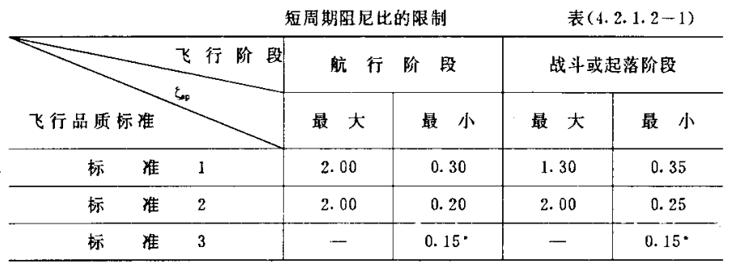
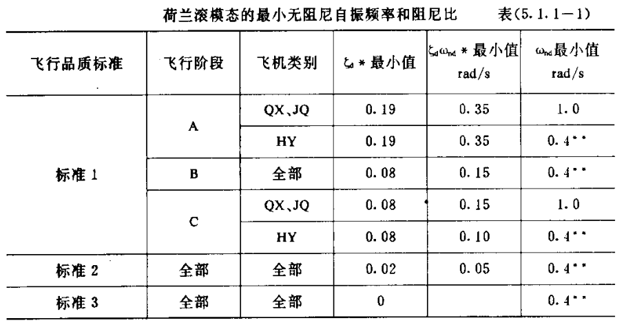
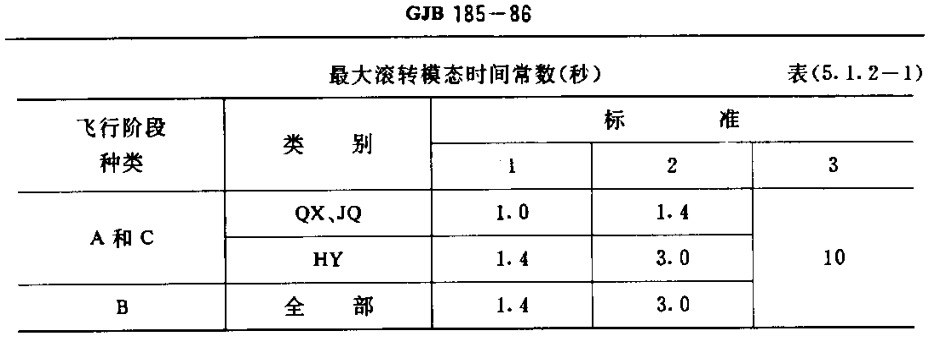
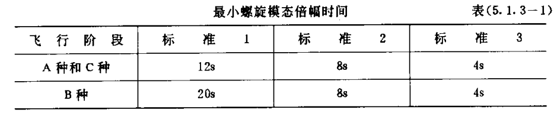
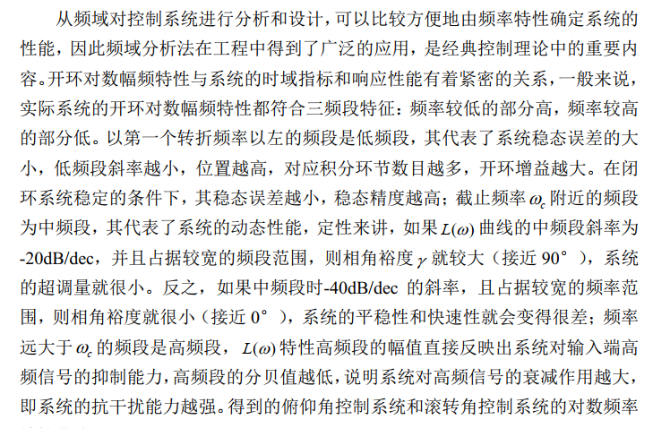

模态分析与飞行品质
模态分析
纵向
短周期分析
短时间内，迎角与俯仰角速度迅速变化
A矩阵的特征根：
由此可得：
$w_n=\sqrt{-Z_\alpha M_q-M_\alpha} \propto-C_{L \alpha} * C_{m q}-C_{m \alpha}$
【其中$C_{mq}<0,C_{m\alpha<0}$，因此$C_{mq}$与$C_{m\alpha}$的绝对值越大，频率越大】
$2 \zeta w_n=Z_\alpha-M_q-M_{\dot{\alpha}}$
【其中$C_{mq}<0,C_{m\dot\alpha<0}$，因此$C_{mq}$与$C_{m\dot\alpha}$的绝对值越大，总阻尼越大】
长周期分析
长时间后，迎角与力矩基本平衡，忽略迎角的变化和力矩的变化
即
A矩阵的特征根：
由此可得：
其中：$X_u=\frac{-\left(C_{D U}+2 C_{D 0}\right) q_0 S}{m U_0}, Z_u=\frac{\left(C_{L U}+2 C_{L 0}\right) q_0 S}{m U_0}, M_u=\frac{\left(C_{M U}+2 C_{M 0}\right) q_0 S c}{I_y U_0}$
横侧向
简化推导太难了，直接放结果
荷兰滚
【$\bar N_r<0,\bar Y_\beta<0$，即第一项大于0；$\bar L_\beta<0$,$\bar N_p<0$，因此第二项小于0】
【$\bar N_r$、$\bar Y_\beta$的绝对值越大，$\bar N_p$的绝对值越小，$\frac{ {\bar L}_\beta }{ {\bar N}_\beta }$的绝对值越小，总阻尼越大】
$\bar L_r>0$越大，荷兰滚阻尼增大；$\bar L_p<0$，$\bar N_p<0$，绝对值增大会略微增加荷兰滚阻尼
螺旋模态
对于四阶方程$a_0s^4+a_1s^3+a_2s^2+a_3s+a_4=0$
忽略高阶项得到：$a_3s+a_4=0$
得到：$s=-\frac{a_4}{a_3}$
【$\bar N_r$的绝对值越大，螺旋模态越稳定】
$\bar L_r>0$越大，螺旋模态时间常数减小；$\bar L_p<0$，$\bar N_p<0$，绝对值增大会略微增加螺旋时间常数
滚转收敛模态
$C_{lp}$是正比于的$C_{L\alpha}$，大迎角会发散
飞行品质等级
纵向品质等级
| 短周期模态 | ||||
|---|---|---|---|---|
| 飞行阶段 | 航行阶段 | 起落阶段 | ||
| 最大 | 最小 | 最大 | 最小 | |
| 等级1 | 2 | 0.3 | 1.3 | 0.35 |
| 等级2 | 2 | 0.2 | 2 | 0.25 |
| 等级3 | —- | 0.15 | —- | 0.15 |
| 长周期模态 | ||||
| 等级1 | ξ>0.04 | |||
| 等级2 | ξ>0 | |||
| 等级3 | T2>55s |


横侧向品质等级
| 滚转收敛模态要求 | |||
|---|---|---|---|
| 巡航状态 | 等级1 | 等级2 | 等级3 |
| 时间常数 | 1.4 | 3 | 10 |
| 荷兰滚模态要求 | |||
| 巡航状态 | ξ最小值 | ξωn最小值 | ωn最小值 |
| 等级1 | 0.19 | 0.35 | 1 |
| 等级2 | 0.02 | 0.05 | 0.4 |
| 等级3 | 0.02 | —- | 0.4 |
| 螺旋模态要求 | |||
| 巡航状态 | 等级1 | 等级2 | 等级3 |
| 倍幅时间 | 12s | 8s | 4s |



操纵性
纵向静操纵性：增加每过载的舵偏量
伯德图
开环系统的三个频段
低频段是指伯德图在第一个转折频率之前的区间，该段区间由开环增益和积分环节决定；中频段是指Bode图在截止频率$w_c$附近的区间；高频段是指频率 $w>10w_c$的区间。
低频段【系统稳定精度】
该低频段的斜率愈小，位置愈高，对应于系统积分环节的数目愈多，开环增益K值愈大。故其闭环系统在满足稳定的条件下，其稳态误差愈小，系统的稳态精度愈高。
中频段【系统动态性能】
该中频段斜率小于-60，则很难使闭环系统稳定；若等于-40，所占频率区间不宜过宽，则闭环系统可能稳定，即使稳定，其相稳定裕度也较小，系统的平稳性较差；如果中频段斜率为-20，且占据较宽的频段区间，一般说来，不仅可以保证系统稳定，而且可以使相稳定裕度增大，取得较好的平稳性。同时以提高截止频率来保证系统要求的快速性。
高频段【系统抗干扰】
系统开环对数幅频在高频段的幅值，直接反映了系统对输入高频干扰信号的抑制能力。高频特性的分贝值愈低，系统抗干扰能力愈强。

闭环系统的稳定性
控制系统的带宽一般指闭环系统的bode图中幅频特性曲线下降到－3分贝所对应的频率，注意这里是闭环系统的幅频特性，不是分析稳定性用的开环系统幅频特性。
控制系统的带宽主要由其闭环传递函数的零极点决定，反映了当参考信号高于此频率后时，系统将无法以正常幅度跟踪，因而带宽越大，系统能响应的频率也越快。
飞行力学评估的主要内容
飞行性能
1.飞行包线
平飞的速度高度包线
失速-最大推力
平飞的速度过载包线
给定过载，
2.平飞性能
3km海拔，不同速度下的推力、功率、迎角、舵量、航时航程
3.无动力下滑性能20→3
最大滑翔比
等速度下滑
4.爬升性能
巡航状态、最大油门所达到的最大爬升性能
5.定常盘旋性能
过载与滚转角的关系
0km不同滚转角、速度对应的盘旋半径、盘旋角速度
3km不同滚转角、速度对应的盘旋半径、盘旋角速度
飞行品质
1.静稳定性
纵向稳定性—稳定裕度
横侧向稳定性
2.纵向模态
短周期模态阻尼比和CAP—5个高度、3个速度
长周期模态阻尼比—5个高度、3个速度
3.横航向模态
荷兰滚阻尼、频率
滚转收敛
螺旋模态